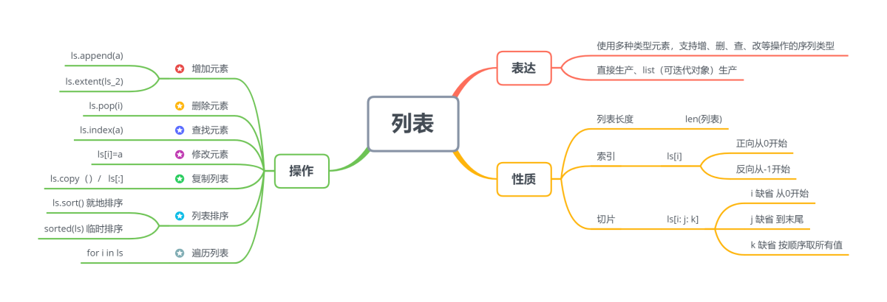
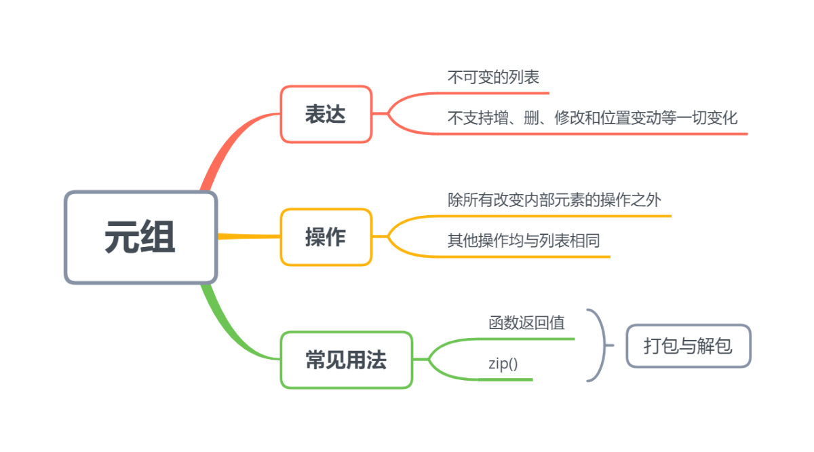
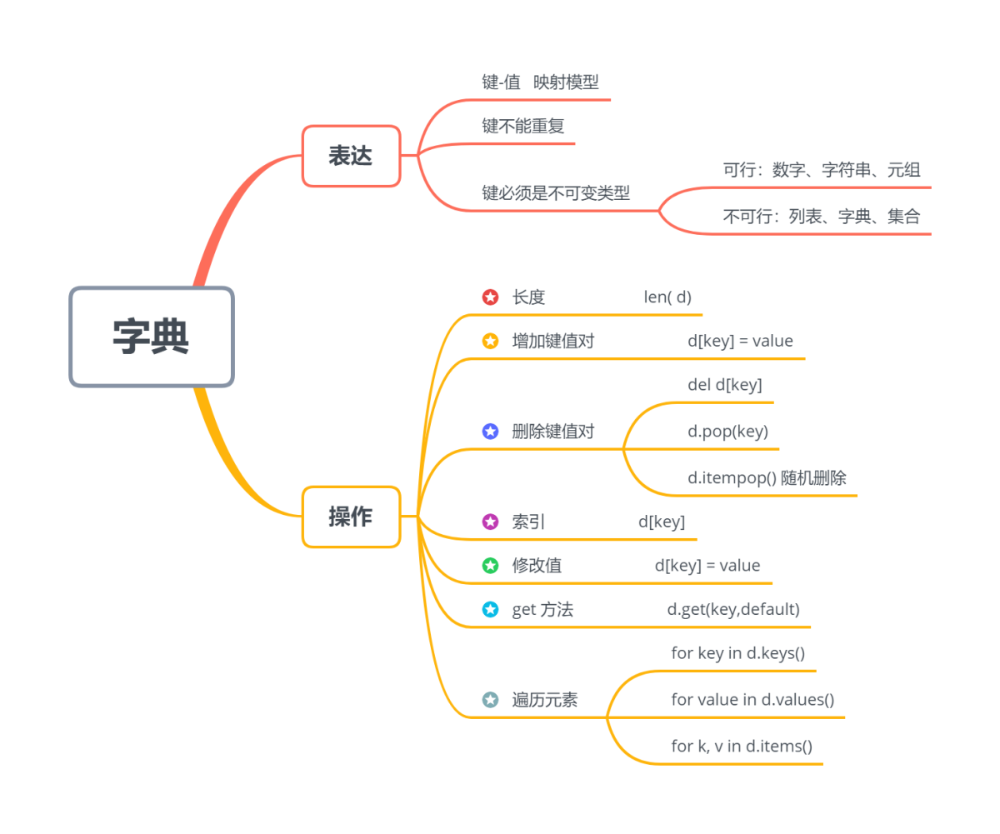

# 整数类型（没有小数点的数字）
num1 = 10
print(num1) 10在Python中，有多种内置的数据类型，每种类型都用于存储不同类型的数据。了解和正确使用这些数据类型对于编写有效的Python代码非常重要。
Python有以下基本数据类型：
使用 type() 函数来查看数据结构的类型
数字类型用于表示数值数据，包括整数（int）和浮点数（float）。
下面是一个例子，演示如何使用数字类型：
# 整数类型（没有小数点的数字）
num1 = 10
print(num1) 10type(num1)int# 浮点数类型（带小数点的数字）
num2 = 3.14
print(num2) 3.14字符串类型用于表示文本数据，使用引号（单引号或双引号）括起来。
下面是一个例子，演示如何使用字符串类型：
intro = "你好，我叫 Jack !"
print(intro) 你好，我叫 Jack !布尔类型用于表示真（True）和假（False）的值。
下面是一个例子，演示如何使用布尔类型：
is_active = True
print(is_active) Trueis_student = False
print(is_student) False当提到Python的运算符，可以包括算术运算符、赋值运算符、比较运算符、逻辑运算符和位运算符等。下面是一些常见的运算符示例及其解析：
比较常见的算术运算符，也就是加减乘除这些。
| 运算符 | 描述 | 举例 |
|---|---|---|
| x+y | 加 | 1+2=3 |
| x-y | 减 | 6-5=1 |
| x*y | 乘 | 2*3=6 |
| x/y | 除 | 2/4=0.5 |
| x//y | 整除，取整数部分 | 2//4=0 |
| x%y | 取余 | 15%4=3 |
| ** | 幂运算 | 2**3=8 二的三次方 |
a = 10
b = 3
# 加法
result = a + b * (a // b)
print(result) 19在加减乘除的基础上直接进行赋值计算，不需要新的变量
| 运算符 | 描述 | 举例 |
|---|---|---|
| = | 赋值 | x = 5 |
| += | 加等 | x += 3 |
| -= | 减等 | x -= 3 |
| *= | 乘等 | x *= 3 |
| %= | 余等 | x %= 3 |
| /= | 除等 | x /= 3 |
| //= | 取整等 | x //= 3 |
| **= | 幂等 | x **= 3 |
a = 10
b = 3
# 加法赋值
a += b
print(a) 13输出为布尔值
| 运算符 | 描述 |
|---|---|
| < | 小于 |
| <= | 小于等于 |
| > | 大于 |
| >= | 大于等于 |
| == | 等于 |
| != | 不等于 |
a = 10
b = 3
# 相等比较
result = a == b
print(result) False标识运算符用于比较对象，不是比较它们是否相等，而是比较它们是否实际上是相同的对象，具有相同的内存位置：
| 运算符 | 描述 | 举例 |
|---|---|---|
| is | 判断两个标识符是不是引用自一个对象 | x is y |
| is not | 判断两个标识符是不是引用自不同对象 | x is not y |
逻辑运算符用于在布尔表达式中组合和比较逻辑条件。Python中的逻辑运算符包括以下三种：and（与）、or（或）和not（非）。
| 运算符 | 描述 | 备注 |
|---|---|---|
| x and y | 如果两个声明都是真的，则返回True | xy都为True,结果为True；否则为False |
| x or y | 如果其中一个语句为真，则返回真 | xy都为False,结果为False；否则为True |
| not x | 反转结果，如果结果为真，则返回False | x为True时，值为False；x为False时，值为True |
逻辑与运算符返回两个操作数都为True时的结果为True，否则返回False。
x = True
y = False
# 与运算
result = x and y
print(result)False这里可能比较难理解，在上面的示例中，x的值为True，y的值为False。当使用逻辑与运算符（and）将x和y进行运算时，由于y为False，所以结果为False。如果x和y都为True，则结果为True。
逻辑或运算符返回两个操作数中至少一个为True时的结果为True，只有当两个操作数都为False时结果才为False。
a = True
b = False
result = a or b
print(result) True逻辑非运算符将操作数的值取反，如果操作数为True，则结果为False；如果操作数为False，则结果为True。
a = True
result = not a
print(result) FalsePython中有多种常用的数据结构，包括列表（List）、元组（Tuple）和字典（Dictionary）
list是Python中最常用的数据结构之一，用于存储一组有序的元素。列表中的元素可以是不同类型的对象，可以进行增删改查等操作。

列表可以使用方括号[]来创建，其中每个元素用逗号分隔。例如：
水果 = ['苹果', '菠萝', '榴莲']
print(水果)['苹果', '菠萝', '榴莲']列表中的元素可以通过索引访问，索引从0开始。例如，要访问列表中的第一个元素，可以使用fruits[0]。可以使用负数索引从列表末尾开始访问元素。例如，fruits[-1]表示访问最后一个元素。
# python中顺序需要向前递减一位，所以索引 0 代表第一个， -1 代表最后一个
print(水果[0])
print(水果[-1])苹果
榴莲列表中的元素可以通过索引进行修改。可以使用赋值语句将新的值赋给列表中的特定位置。
# 修改列表中第二个
水果[1] = '香蕉'
print(水果)['苹果', '香蕉', '榴莲']添加元素：可以使用append()方法将元素添加到列表的末尾。
水果.append('我爱香蕉')
print(水果)['苹果', '香蕉', '榴莲', '我爱香蕉']删除元素：可以使用remove()方法删除列表中的特定元素。
水果.remove('香蕉')
print(水果) ['苹果', '榴莲', '我爱香蕉']列表的排序是指将列表中的元素按照一定的顺序进行排列。Python 提供了多种方法来对列表进行排序，其中最常用的是使用 sort() 方法。下面是一个实际案例和答案解析。
sort()函数可以对列表进行就地排序，即直接修改原始列表的顺序。使用 sorted() 函数对列表进行临时排序，不改变原始列表的顺序。
# 按数字对列表进行升序排序：
list_asc = [100, 50, 65, 82, 23]
list_asc.sort()
print(list_asc)[23, 50, 65, 82, 100]# 降序排序
list_des = [100, 50, 65, 82, 23]
list_des.sort(reverse=True)
print("降序排序后的列表：", list_des)降序排序后的列表： [100, 82, 65, 50, 23]元组与列表类似，也是用于存储一组有序的元素。但是，元组一旦创建，其元素不可更改，即元组是不可变的。

# 创建一个元组
person = ('Jack', 25, 'China')
# 访问元组元素
print(person[0]) Jack# 尝试修改元组元素（会抛出异常）
person[1] = 30TypeError: 'tuple' object does not support item assignment在上面的示例中，我们创建了一个包含个人信息的元组。通过索引访问元组中的元素，但是尝试修改元组元素会引发TypeError异常，因为元组是不可变的。
元组在需要存储不可变数据集合或对数据进行保护时非常有用。由于元组是不可变的，因此在某些情况下比列表更安全和高效。
可以将元组的元素解包到多个变量中，从而快速访问元组的各个元素。
# 上述的person元组中，有三个数值，所以必须设`x,y,z`
x, y, z = person
print(x) Jack字典是Python中一种常用的数据结构，又称 哈希表，它以键-值（key-value）对的形式存储数据。以下是对字典的详细说明：

字典使用花括号{}来创建，每个键-值对之间使用冒号:分隔，不同键-值对之间使用逗号,分隔。例如：
student = {'姓名': '帅气的Jack', '年龄': 24, '成绩': 'A+'}
student{'姓名': '帅气的Jack', '年龄': 24, '成绩': 'A+'}可以通过键来访问字典中的值。使用键来提取相应的值，使用方括号[]操作符，将键作为索引传递给字典。例如：
print(student['姓名'])帅气的Jack字典中的值是可以修改的。可以通过指定键来更新字典中的值。例如：
#要修改元素，无论中英文都要加上引号''
student['成绩'] = '刚好及格'
print(student){'姓名': '帅气的Jack', '年龄': 24, '成绩': '刚好及格'}设置变量的时候，不要使用类似list, tuple等，如果出现'list' object is not callable，使用del list删除变量
dict1 = {'key': ['value', 'value2'], 'key2': 'value2'}
dict2 = {'key': ('physics', 'chemistry', 1997, 2000), 'key2': 'value2'}要确定字典有多少项，可以使用len()函数
print(len(student))3del student['姓名'] # 删除键是'姓名'的条目
student.clear() # 清空字典所有条目
del student # 删除字典
del list # 删除变量字典Dict中键和值是一 一对应的，键是唯一的，如果重复最后的一个键【值】对会替换前面的。若一个键中需要存放多个值，可以考虑使用元组Tuple和列表List
list() 函数将元组转换为列表。tuple() 函数将列表转换为元组。# 元组转列表
my_tuple = (1, 2, 3, 4, 5)
my_list = list(my_tuple)
print(my_list)[1, 2, 3, 4, 5]# 列表转元组
my_list = [1, 2, 3, 4, 5]
my_tuple = tuple(my_list)
print(my_tuple)(1, 2, 3, 4, 5)字典无法直接转换为列表或者元组
keys() 方法返回一个包含字典中所有键的可迭代对象。
items() 方法获取字典的键值对
# keys() 是一个字典(Dictionary)对象的方法，用于返回字典中所有的键
my_dict = {"name": "John", "age": 25, "city": "New York"}
my_list = list(my_dict.keys())
print(my_list)
print(type(my_list))['name', 'age', 'city']
<class 'list'># 使用 items() 方法获取字典的键值对，然后使用 tuple() 函数将键值对转换为元组。
my_dict = {"name": "John", "age": 25, "city": "New York"}
my_tuple = tuple(my_dict.items())
print(my_tuple)
print(type(my_tuple))(('name', 'John'), ('age', 25), ('city', 'New York'))
<class 'tuple'>